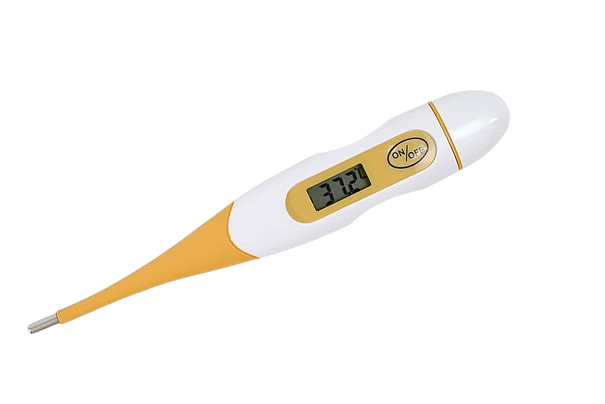
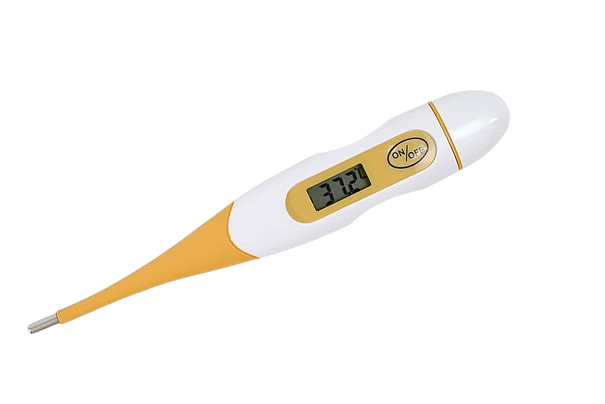

Converta Temperaturas
Histórico de Conversões
Sobre Conversão de Temperaturas
Converta facilmente entre escalas térmicas. Ideal para estudantes, cientistas e viajantes.
Converta facilmente entre escalas térmicas. Ideal para estudantes, cientistas e viajantes.
